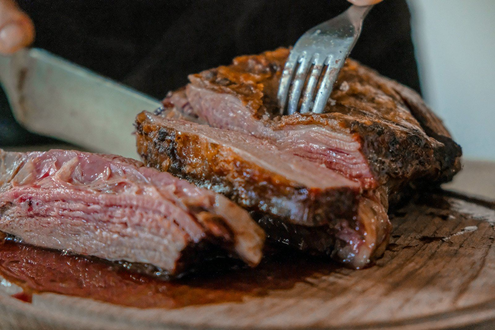
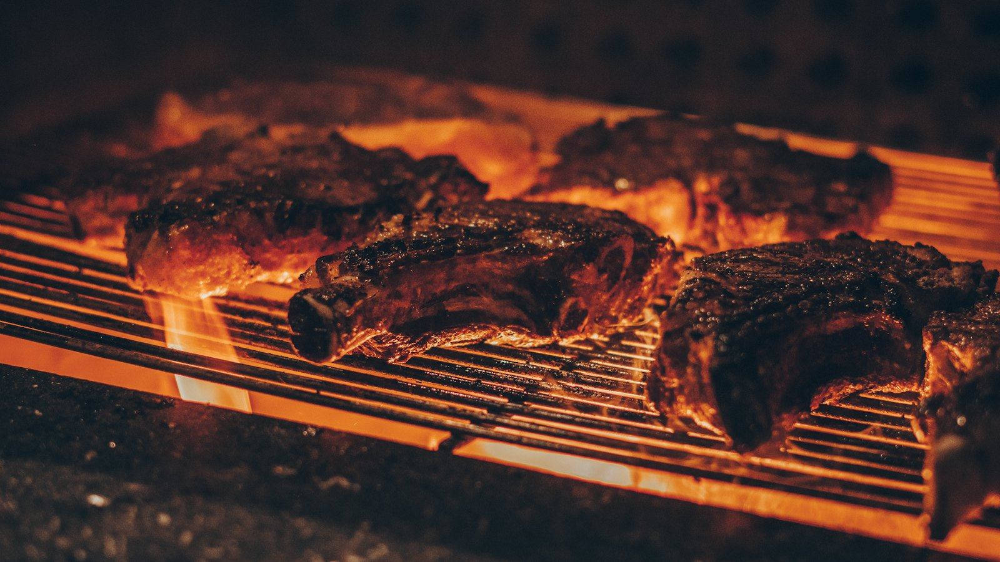

Cinco regras que decidem tudo o que vem depois.
Base de 4 pt
Dentro de componente: 4–16. Entre componentes: 12–24. Entre seções: 32–48 no celular, 64–96 no desktop.
Colunas e margens
Alvos de toque ≥ 44. Alturas de controle: 32 chip · 40 botão pequeno · 48 stepper · 56 botão e campo · 64 linha de lista.
Raios concêntricos
Regra: raio interno = raio externo − padding. Card 28 com padding 20 leva foto com raio 8; tab bar pílula com padding 4 leva aba pílula.
Três níveis de elevação
Sombras longas e frias, opacidade máx. 16%. Nada de borda + sombra no mesmo elemento.
Geist
Grotesca neo-suíça de desenho técnico (Vercel, OFL, no Google Fonts). Abertura alta para ler de pé, a um braço da churrasqueira; algarismos tabulares nativos (tnum) para timers e pesos que não “pulam”; pesos 400/500/600 bastam. Menos onipresente que Inter, mais neutra que display. Uma família só: hierarquia por tamanho e cinza, nunca por troca de fonte.
Verde de marca, laranja só para calor.
Todo o segmento fala vermelho, preto e madeira. O verde-vivo das referências tira o churrasquin do balcão de açougue e o coloca na prateleira de ferramenta: lê como “pronto, certo, vai”, é o verde do chimichurri e da brasa de carvão de qualidade quando acende, e contrasta com o vermelho da carne crua nas fotos em vez de competir. O laranja-brasa fica como cor semântica de calor: timer rodando, temperatura subindo. Nunca decoração.
Verde nunca em texto sobre branco (contraste 1.6:1): sobre ele, sempre tinta #003D27 (10.9:1). Modo escuro inverte neutros; marca e calor se mantêm.
A linguagem de marca, com hora marcada.
Formas grandes em carvão (#0A0A09) sobre verde, com gradiente atravessado por ruído feTurbulence em multiply. Aparece em quatro lugares, e só neles:
Carne crua, isolada, mesma luz.
Peça inteira, crua, sobre pedra neutra clara (mármore cinza #E9E8E4). Câmera a 45°, luz suave de janela da esquerda, sombra curta. Mesmo enquadramento para todo o banco: a peça ocupa 70% da largura, centrada. Sem tábua, faca, fogo ou mão. No card, foto em proporção 4:3 (lista 1:1), raio = raio do card − padding.


Botões
Chips e stepper
Campo
Lista
Anel e barras
Toast e tab bar
Adicionar ao plano
Picanha · 2 peças para 12 pessoas
Três telas, um sistema.
da família